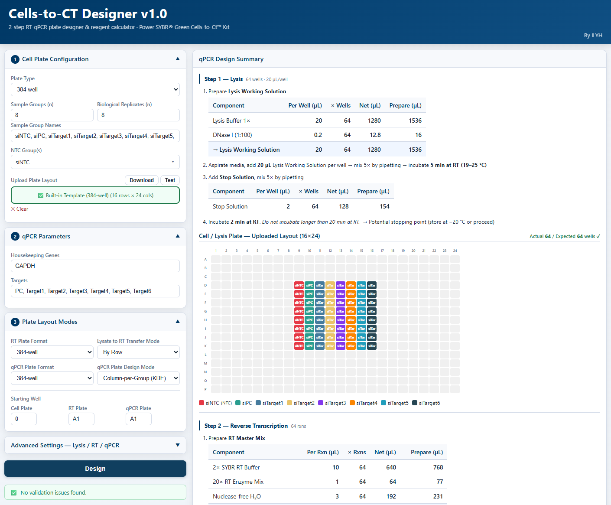
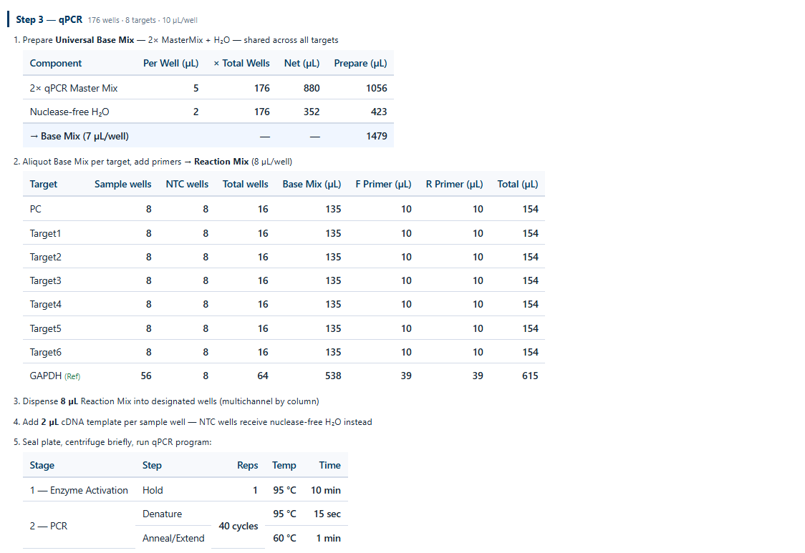
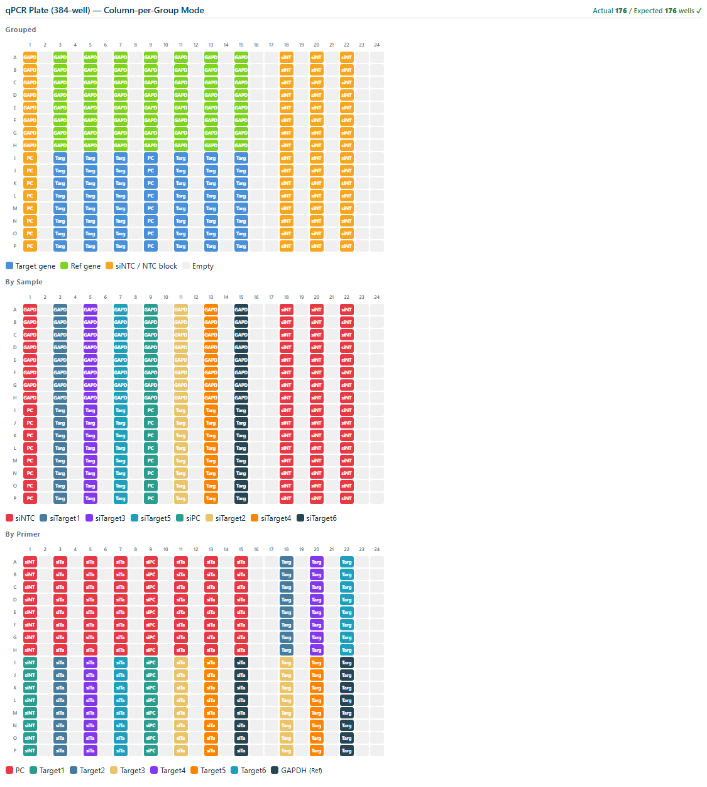

1How it works
Step 1
Define groups & targets
Enter cell-line / treatment groups, target genes, replicate counts and the housekeeping gene used for normalization.
Step 2
Generate cell seeding plate
The tool builds a 96-well cell-seeding map respecting your group / replicate layout, with edge-well exclusion options.
Step 3
Build RT & qPCR plate maps
RT plate (96-well) and qPCR plate (96 or 384-well) are generated with mapped sources, reagent volumes per the Cells-to-Ct™ Kit protocol.
Step 4
Export plate maps & recipes
Download CSV plate maps and a reagent recipe sheet (master mix per plate) ready for the bench.
2Preview
Define groups, targets & replicates
Enter cell-line / treatment groups, target genes and replicate counts; the tool calculates total well usage and warns when the layout exceeds plate capacity.

RT plate maps
RT plate map are generated automatically with replicate grouping and optional edge-well exclusion.

qPCR plate map & reagent recipes
96 or 384-well qPCR plate map (top) with mapped sources, followed by the reagent volume recipe sheet (bottom) following the Cells-to-Ct™ Kit protocol. Export everything as CSV ready for the bench.

